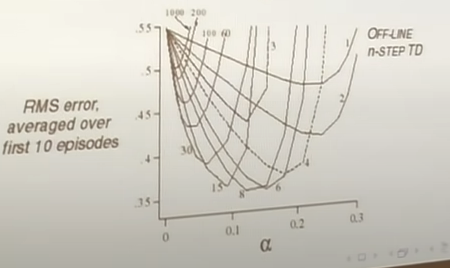

Up
Reinforcement Learning
Overall Idea
Most systems are complex and not modeled. So, these methods use experience to learn behavior given an unknown environment(Unlike dynamic programming which needs the known MDP). Making decisions in a Model-Free environment has the same two stages as Dynamic programming: Prediction(covered here) and control .
Prediction
As a reminder, prediction involves estimating the value function given a policy. E.G how good is the policy of moving randomly in chess. Control will involve creating a good strategy. Three approaches for prediction are Monte-Carlo, Temporal Difference Learning, and TD(lambda) which I will call TD(la).
Lowkey this site does a better job than me with notes. So go there if you want more details
Monte Carlo
Monte Carlo works to learn the value function (total discounted reward from any state). It requires that every episode terminates E.G every game of chess ends. Value function in maths terms:
$$v_{\pi}(s) = E_{pi}[R_{t+1} + \gamma R_{t+2} + ... | S_t = s]$$
For Monte Carlo, we replace the expectation with an expectation determined by our experiences (with enough episodes this converges to the underlying expectation because of large numbers). First visit Monte-Carlo is one approach:
Complete Many episodes
For every state visited in an episode, the counter for that state is incremented ONCE: N(s) = N(s) + 1
For every state, the total reward is incremented by the reward from the first visit onward: S(s) = S(s) + G_t
Estimate a states value as V(s) = S(s)/N(s)
Alternatively, we can do this incrementally:
Complete An Episode
For every state visited in an episode, the counter for that state is incremented ONCE: N(s) = N(s) + 1
For every state, the value is modified by V(S) = V(S) + 1/N(s) * (Gt-V(S)). Alternatively, 1/N can be replaced with an alpha of choice
An interesting insight is that for policy evaluation, we don't really care about exploration. We care about how good our policy is, so it doesn't matter if we don't get accurate values for items in the state space that the policy avoids. This won't work for control.
TD Learning
The motivation here is to make use of incomplete episodes. A motivation here is that the backup at the end of an episode might not provide full insight. I.E in the case where a driver faces a near-accident during their commute, the end of the episode is normal, but it would make more sense to update their driving approach to be safer due to the close call.
Start an episode
For every state visited in an episode, the value is incremented as V(s, t) = V(s, t) + alpha*(R_t+1 + gamma*V(s, t+1) -V(s, t))
This estimate is based on the Bellman equation, where Gt = R_t+1 + gamma*V(s, t+1)
Advantages of TD are that it can learn at every step and without a final outcome(IE incomplete sequences). The intuition behind TD is that you estimate dynamics, take one step of reality(real reward and dynamics) and estimate value function from then on. But, since a step of estimation has been replaced with a step of reality, you can refine your previous estimate as the new estimate better reflect reality (even if just slightly)
Monte Carlo vs TD
Here is an example of how MC and TD would train. The underlying example is a commuter heading home and predicting total trip duration. Their guess is updated at different key points (states)
TD pulls points towards the next estimate, while MC pulls them towards the final one.
There is also a bias/variance tradeoff between the two. For MC, we are adding return based on every step (Gt = Rt+1 + gamma*Rt+2 + ....); this reward is unbiased since it is the definition of total reward. For TD, we are adding return based on our ESTIMATE of the next state Gt = Rt+1 + gamma V(st+1) (this approach wouldn't be biased if V(st+1) was known). Since this is an estimated value, it is biased. However, variance is much lower since there is only one transition; the reward in MC varies strongly due to policy decisions down the line.
As a result, TD generally converges more quickly, but MC converges more stably. Higher step sizes also increase convergence speed (unless it's too big and convergence breaks), but with more noise.
With a finite batch, TD and MC converge differently. MC will minimize mean-squared error without any knowledge of Markov property. TD exploits the markov property to build an MDP and solve from there. TD does worse in less-markov environments (IE Blackjack, where the MDP under the hood is only partially observed by the agent). As an example, let there be two states A and B. The three episodes are A, B, R = 0 ; B, R=1; B, R=1. In both MC and TD, the reward from B is 2/3. But, in MC the reward from A is 0 (minimize error from the known result), but in TD it is 2/3(logic is that A always leads to B in the MDP, which has reward 2/3).
Training
MC does not bootstrap, but TD and DP do with the Bellman equation. DP needs to use the entire tree to back up the result, while TD and MC sample.
Forward TD Lambda (TD(la))
So far, there TD and MC have a tradeoff between bias/variance and bootstrapping/deep backups. TD(la) is a comprimise between the two, where a few steps in reality are taken and backed up in the value estimate:
Select a number of steps n (e.g 3)
Define the reward function. For n=3, Gt = Rt+1 + gamma*Rt+2 + gamma^2Rt+3 + gamma^3Rt+4
Loop:
- Start an episode
- For every state visited in an episode, the value is incremented as V(s, t) = V(s, t) + alpha*(Gt -V(s, t)) (using Gt from before)
Different values of n give different training curves. N near inf = MC, N near 1=TD. For a random walk MDP:

But, this is just for a toy MDP. We would want to have a robust algorithm. The approach to ths is to average over n-step returns. E.G, averaging over 2 and 4 step returns:
$$Gt = \frac{1}{2}G^2 + \frac{1}{2}G^4$$
Taking this to the extreme, we average over all lambdas, weighting shorter sequences stronger(using a weight (1-lambda)*lambda^(n-1) such that each weight gets smaller by a factor of lambda). We assign a weight to the episode end equal to all remaining weight(this is the MC case, it gets weight lambda^(T-t-1)):
$$G^\lambda_t = (1-\lambda)\sum^{T-t-1}_{n=1}\lambda^{n-1}G_t^{(n)} + \lambda^{T-t-1}G_t$$
Backward TD Lambda
Forward TD(la) has some issues still. This algorithm requires lookahead to future rewards in order to complete; it isn't causal! The new approach is to maintain an eligibility trace for each state based on how recent it is and how frequent it was. It is the same as forward TD(lambda) from a maths standpoint in an offline environment, but doesn't require forward lookahead for online:
Considering different lambda values. If lambda=0, all traces are zero except for the current one: This is TD zero! If lambda=1, credit only falls by gamma per step. This is exactly the same as Monte Carlo(this is the case because the reward in dt needs to be scaled by gamma^k when going k steps back)! This is actually a better version of MC since it can be run online and learn from important states within the episode.